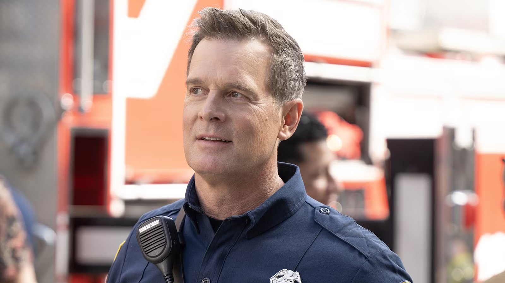
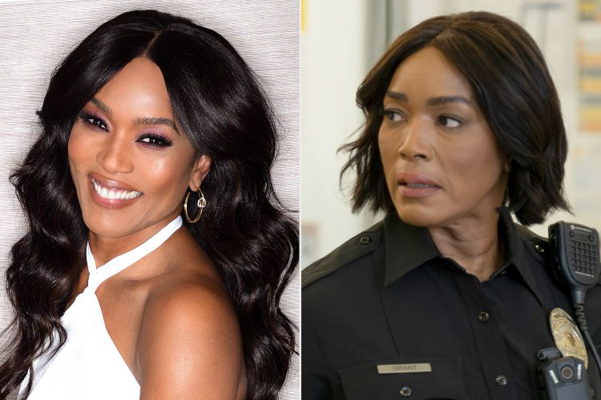

interviews
TV INSIDER:‘9-1-1’s Oliver Stark Teases Buck & Eddie Issue After Premiere Incident With Chris & Theo
 Published: 19 November 2026
Published: 19 November 2026

SCREENRANT: 9-1-1’s Peter Krause Explains How Bobby Could Still Be Alive
Published: 19 November 2026

PEOPLE EXCLUSIVE: Angela Bassett Says 9-1-1 Feels Like ‘Art Imitating Life,' Shares How It Influences Her Approach to Health
Published: 19 November 2026
